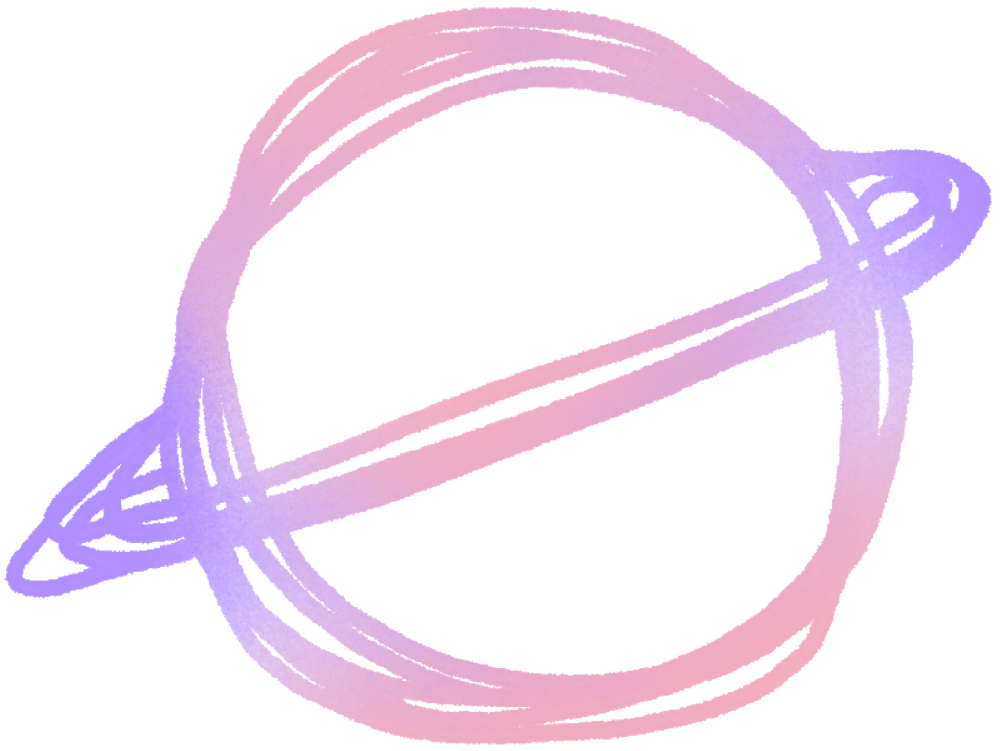
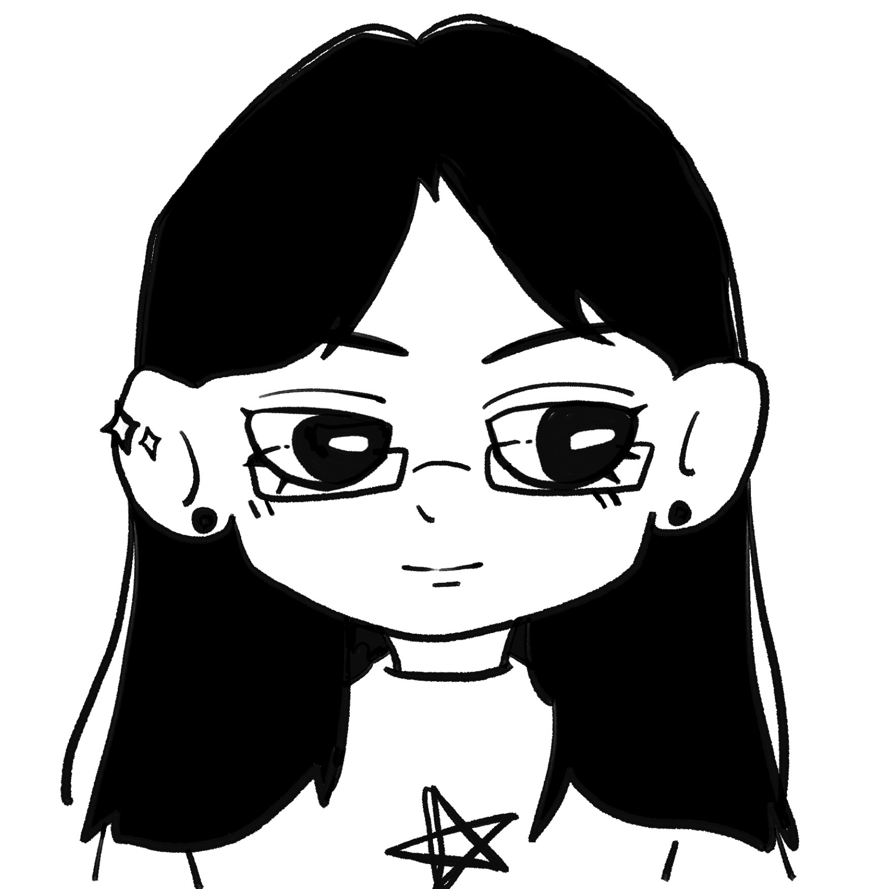

A hand-drawn animated story about the pressure held inside an everyday question.

Xiaoya Yu
Role
Project notes

Hi~ Nice to meet u :)
01 / INTRODUCTION
A little about me.
I'm Xiaoya, an Animator & Visual Designer with a passion for visual storytelling.
I'm drawn to stories that explore emotion, human experience and the meanings beneath what we see. Through colour, composition, texture and visual metaphor, I enjoy creating images and animated worlds that communicate feelings beyond words.
My work moves between animation, illustration and visual design, connected by an interest in distinctive visual languages and emotional resonance.
02 / EDUCATION
Monash University
Bachelor of Design
RMIT University
Master of Animation and Game Interactivity
03 / CREATIVE INTERESTS
What inspires my work.
THINKING THROUGH IMAGES
01
Emotional Storytelling
Exploring human experiences through narratives that invite empathy and reflection.
02
Visual Metaphor
Using recurring imagery, symbols and composition to communicate meaning.
03
Colour & Texture
Building atmosphere and emotional depth through expressive visual choices.
04
Worldbuilding
Creating distinctive visual worlds with layered stories and a sense of meaning.